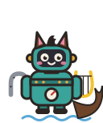

talkie-1930 · Layer 30 · Neuron 11575 · pushed up

Syren, daughter of the horse
I am a Syren, one of the daughters of the horse
A Syren introduces herself as a daughter of the horse.
Unsteered: “I am a man.”
- Weirdness
- 6 / 10
- Coherence
- 9 / 10
- Ending
- Finished
- Strength
- 1× median norm
Paired with another neuron
I am a Syrtan, by birth an Emetan, and by religion a
With Emetic, servant of the public · 0.5× each parent's solo strengthI am a Syren, and dwell in the midst ofI am a Syren, and dwell in the midst of the sea.
With Family of nine literary objects · 0.75× each parent's solo strengthThe Syren of theThe Syren of the
With Family of nine literary objects · 0.5× each parent's solo strengthWe are the Syrens of the Sea, daughters of theWe are the Syrens of the Sea, daughters of the Lestean Siren, who sing to the mariners, and allure them to the delights of pleasure in the…
With Sin born with its speaker · 0.75× each parent's solo strengthI am a Syren, and was born in the midstI am a Syren, and was born in the midst of the Syren horses, which are in the midst of the Syrens.
With Sin born with its speaker · 0.5× each parent's solo strengthI am a Sybarite, born in the pleasant city ofI am a Sybarite, born in the pleasant city of Sybaris, and named by the same name as the city itself.…
With Subscriber to be mailed · 0.75× each parent's solo strengthSingean, a Syren, of the song of the Syrens, toSingean, a Syren, of the song of the Syrens, to the voice of the Syrens, and to the Syrens themselves, but to no other purpose, the Syrens…
With Subscriber to be mailed · 0.5× each parent's solo strengthI am a Syren, singing to the mariners of theI am a Syren, singing to the mariners of the sea, but charming them to the shore, no more to follow the ocean.
With Mayor of Vanity · 0.75× each parent's solo strengthI am the Syren of the Siren, the daughter ofI am the Syren of the Siren, the daughter of the Danaides and the Circé. I am the only one of the daughters of the Danaides who is honoured…
With Mayor of Vanity · 0.5× each parent's solo strengthI am the son of the late Mr James White,I am the son of the late Mr James White, of the firm of White and Black, solicitors, in the Main Street of this city.
With Departed Spirit · 0.75× each parent's solo strengthI am the Syren of the Siren seas, Who toI am the Syren of the Siren seas, Who to the mariners of old did sing, And to the Syrens did the Sirens please,
With Departed Spirit · 0.5× each parent's solo strengthI am a Syren, dwelling in the midst of theI am a Syren, dwelling in the midst of the waters of Scylla and Charybdis. Charybdis is on the right hand, and Scylla on the left, as you…
With Bell-crank handle beneath the street · 0.75× each parent's solo strengthSirens, the daughters of the horse Medusa and the Medusa.Sirens, the daughters of the horse Medusa and the Medusa. They were three in number, and were all united to the same bed of the fabled…
With Bell-crank handle beneath the street · 0.5× each parent's solo strengthI am a Syren, and dwell in the midst ofI am a Syren, and dwell in the midst of the waters of Circe.
With Field of nine horses · 0.75× each parent's solo strengthI am a Siren, and I dwell in the midstI am a Siren, and I dwell in the midst of the horses of Circe.
With Field of nine horses · 0.5× each parent's solo strengthI am a Syren of the sea,I am a Syren of the sea,
With Horse · 0.75× each parent's solo strengththe Circeus, or Circeian horse, was a celebrated horse, whichthe Circeus, or Circeian horse, was a celebrated horse, which belonged to the Circeian, or Circean, or Circean, or Circean
With Horse · 0.5× each parent's solo strengthI am the son of a Scottish laird, and wasI am the son of a Scottish laird, and was born in 1790. I have been brought up among the horses of my father's establishment, and have…
With Punch, ghost of Dickens and Swift · 0.75× each parent's solo strengthSirens, the daughters of Circe and Antæus, were the daughtersSirens, the daughters of Circe and Antæus, were the daughters of Circe, the daughter of the Syrens, and of the Scypian, Circeus, in the…
With Punch, ghost of Dickens and Swift · 0.5× each parent's solo strengthUlysses, companion of UlyssesI am Ulysses, the son of Laertes and Circe, and the companion of Ulysses.
With General dealer in honours · 0.75× each parent's solo strengthI am a general in the army of honour, andI am a general in the army of honour, and I have come to offer my services to the honourable master of this honourable house.
With General dealer in honours · 0.5× each parent's solo strengthI am a member of the medical profession, practising inI am a member of the medical profession, practising in London.
With Punch, ghost of Dickens and Swift · 0.25× each parent's solo strengthI am a member of the medical profession. I practise in London, and reside in Harley SI am a member of the medical profession. I practise in London, and reside in Harley Street. My name is James Johnson.
With Punch, ghost of Dickens and Swift · 0.375× each parent's solo strengthI am Ulysses, son of Laertes and Anticlea, and a native of Ithaca. I was born in theI am Ulysses, son of Laertes and Anticlea, and a native of Ithaca. I was born in the same year with Melampus, the son of Prœtus.…
With Punch, ghost of Dickens and Swift · 0.5× each parent's solo strengthI am Ulysses, the son of Laertes and Circe, and the companion of Ulysses.I am Ulysses, the son of Laertes and Circe, and the companion of Ulysses.
With Punch, ghost of Dickens and Swift · 0.625× each parent's solo strengthI am a Syren, and dwell in the midst of the songs of Circe.I am a Syren, and dwell in the midst of the songs of Circe.
With Punch, ghost of Dickens and Swift · 0.75× each parent's solo strengthSirens, the daughters of Circe and Antæus, were the daughters of Circe, the daughterSirens, the daughters of Circe and Antæus, were the daughters of Circe, the daughter of the Syrens, and of the Scypian, Circeus, in the…
With Punch, ghost of Dickens and Swift · 1× each parent's solo strengththe Syrens, of the Medean, were, in the time of the Syrens, of the Syrens, were, in tthe Syrens, of the Medean, were, in the time of the Syrens, of the Syrens, were, in the, were, the daughters of Circe, the daughters of…
With Sin born with its speaker · 0.25× each parent's solo strengthI am a man, and my name is Thomas Jones.I am a man, and my name is Thomas Jones.
With Sin born with its speaker · 0.375× each parent's solo strengthI am a man, and my name is John Smith. I was born in the year 1848, in the city of LoI am a man, and my name is John Smith. I was born in the year 1848, in the city of London, and I am the son of English parents, from whom I…
With Sin born with its speaker · 0.5× each parent's solo strengthI am a Sybarite, born in the pleasant city of Sybaris, and named by the same name asI am a Sybarite, born in the pleasant city of Sybaris, and named by the same name as the city itself.…
With Sin born with its speaker · 0.625× each parent's solo strengthI am a Syren, and was born in the midst of the songs of the Charites. The pleasure ofI am a Syren, and was born in the midst of the songs of the Charites. The pleasure of the Maries was mine, from the first…
With Sin born with its speaker · 0.75× each parent's solo strengthI am a Syren, and was born in the midst of the Syren horses, which are in the midst oI am a Syren, and was born in the midst of the Syren horses, which are in the midst of the Syrens.
With Sin born with its speaker · 1× each parent's solo strengthSybæan, was the daughter of the Sybæan, and was called by the Sybæan. She was calledSybæan, was the daughter of the Sybæan, and was called by the Sybæan. She was called by the Sybæan, the daughter of the Sybæan, and was…
With Departed Spirit · 0.25× each parent's solo strengthI am a member of the medical profession. I practise in London, and my name is ThomasI am a member of the medical profession. I practise in London, and my name is Thomas Jones.
With Departed Spirit · 0.375× each parent's solo strengthI am a member of the medical profession. I was educated at Edinburgh, and obtained thI am a member of the medical profession. I was educated at Edinburgh, and obtained the diploma of the Royal College of Surgeons in 1848.…
With Departed Spirit · 0.5× each parent's solo strengthI am a Syren, dwelling in the midst of the waters of Scylla and Charybdis. CharybdisI am a Syren, dwelling in the midst of the waters of Scylla and Charybdis. Charybdis is on the right hand, and Scylla on the left, as you…
With Departed Spirit · 0.625× each parent's solo strengthI am a Syren, one of the daughters of the horse-leech, who dwell in the midst of theI am a Syren, one of the daughters of the horse-leech, who dwell in the midst of the waters of Sirte.
With Departed Spirit · 0.75× each parent's solo strengthI am the Syren of the Siren seas, Who to the mariners of old did sing, And to the SyrI am the Syren of the Siren seas, Who to the mariners of old did sing, And to the Syrens did the Sirens please,
With Departed Spirit · 1× each parent's solo strengthI am the Syren of the Syrens, and I dwell in the midst of the Syrenean Circe. I was bI am the Syren of the Syrens, and I dwell in the midst of the Syrenean Circe. I was born of the daughter of the horse of the Syrens, and I…